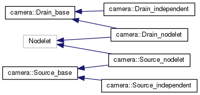
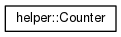

Main Page
Namespaces
Classes
Files
Class List
Class Hierarchy
Class Members
Class Hierarchy
Go to the textual class hierarchy


camultiplex
Author(s): Fangjia Shen
autogenerated on Thu May 28 2020 11:06:52